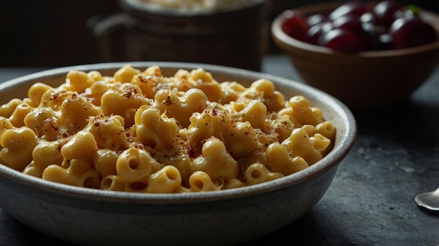

Home
Mac & Cheese

Description
Welcome to this delicious Mac and Cheese recipe. This is an easy
to follow recipe with little ingredients and
no compromise on flavour.
Ingredients
- Macaroni pasta
- Milk
- Cheese
- Flour
- Breadcrumbs
Steps
- Cook pasta in boiling water
- Mix milk and flour together with butter
- Melt cheese into this
- Mix pasta in
- Pour into Pyrex dish and add breadcrumbs on top
- Cook in oven for 10 minutes/ Gas Mark 5